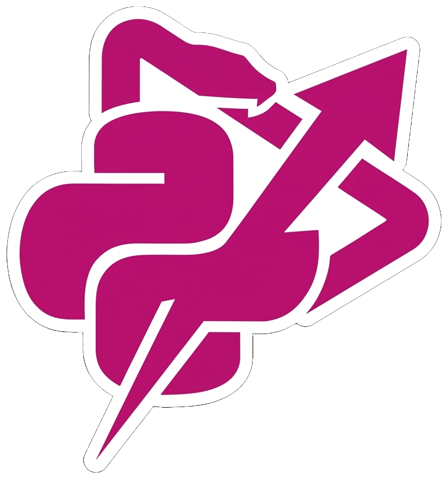
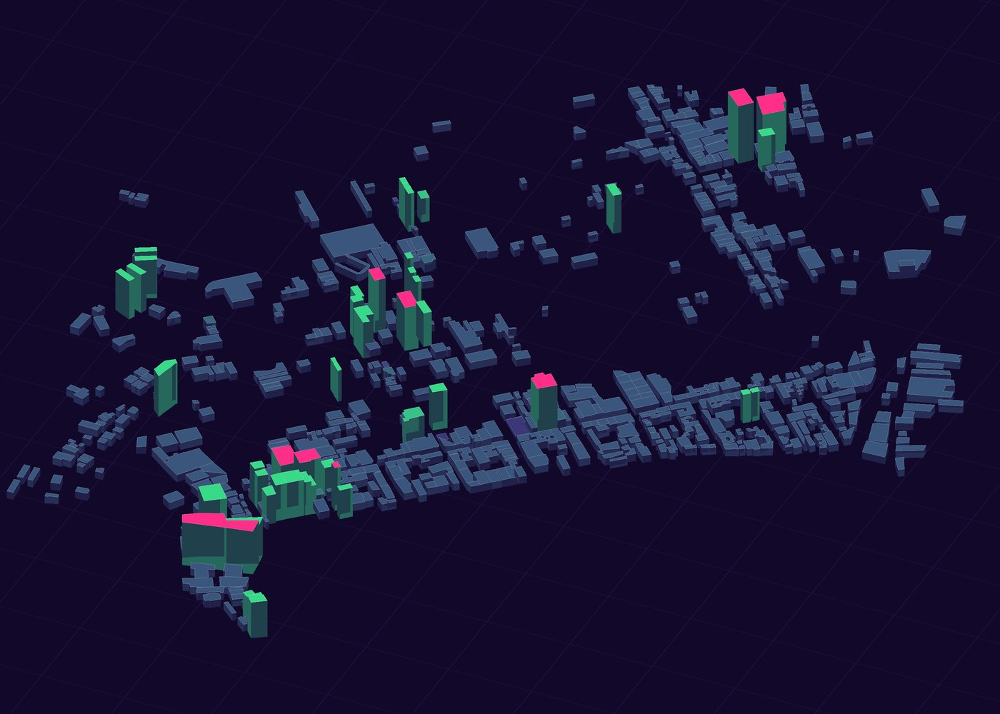
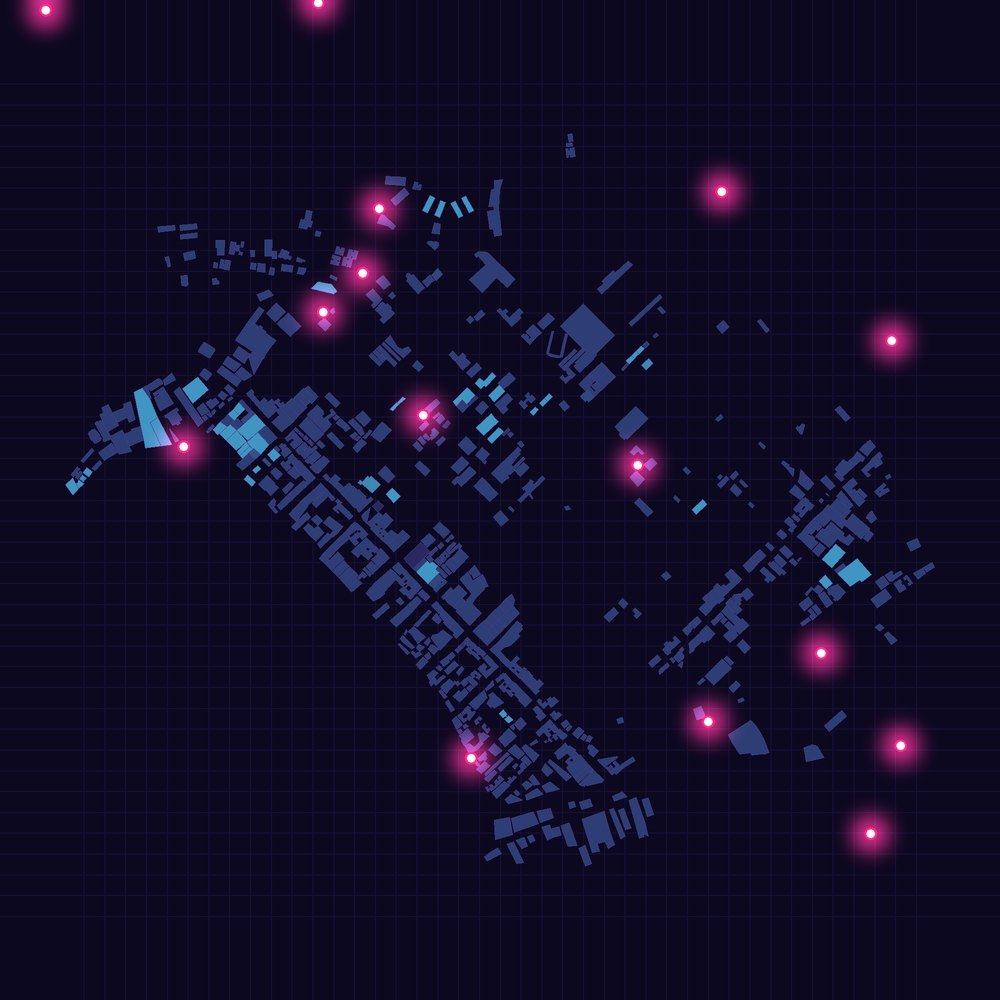
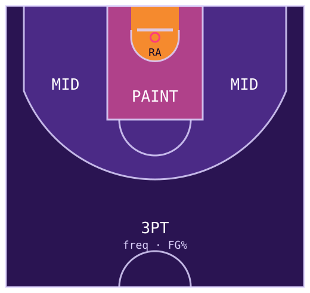
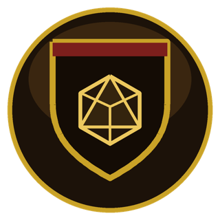

ProjectsProjetos
Not everything is a game. Research, tools and engines, mostly from UFF.
Nem tudo é jogo. Pesquisa, ferramentas e engines, quase tudo da UFF.

Power PPlay
The Python game framework taught at UFF, rebuilt: versions 2.0 and 2.1, with its own IDE.
A framework de jogos em Python ensinada na UFF, reconstruída: versões 2.0 e 2.1, com IDE própria.

Akuanduba OS
A digital twin of Niterói's traffic: cameras, graph forecasting, RL traffic lights and ambulance routing.
Um gêmeo digital do trânsito de Niterói: câmeras, previsão em grafo, semáforos por RL e rotas de ambulância.

Scientific researchPesquisa científica
Computer vision research at Media Lab UFF with a CNPq grant: street cameras as traffic sensors.
Pesquisa em visão computacional no Media Lab UFF com bolsa CNPq: câmeras de rua como sensores de trânsito.

Project Athena
NBA AI Engine: predicts the winner and the point spread with a deep residual network. 71.2% accuracy.
NBA AI Engine: prevê o vencedor e o saldo de pontos com uma rede residual profunda. 71,2% de acerto.

Grimório do Mestre
D&D Builder: a desktop companion for running D&D 5E, with maps, bestiary, combat and a Telegram crow.
D&D Builder: um app de mesa para mestrar D&D 5E, com mapas, bestiário, combate e um corvo no Telegram.